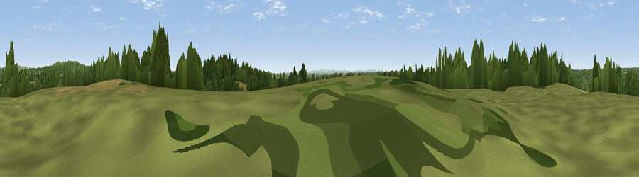

Crockerhill
#23551 in England · top 35% of its area beats it · near WickhamThe view, rendered

A 360° render of this exact spot computed from the terrain model, tree cover and land cover — summer colours, afternoon light, calibrated against photographs of famous viewpoints. Real trees, hedges and buildings will differ in detail.
The panorama
Grey silhouette: terrain skyline in each direction (720 bearings, Earth curvature and refraction included). Dashed green: skyline with trees (+15 m) and buildings (+8 m) as obstacles. Blue strip: how far the ground is visible on each bearing.
Where the view opens
Wedge length = distance to the farthest visible ground on that bearing (vegetation-aware). Rings at 10, 25 and 50 km.
What fills the view
34% woodland · 30% grassland · 28% cropland · 6% built-up ·
Angular shares of the visible panorama (visual magnitude), not map area. Landscape diversity 0.58 (0–1 Shannon).
Key numbers
More beautiful places nearby
The staircase of upgrades: each row has a higher view potential than everything closer. Driving times are estimates from straight-line distance, calibrated against real road routing — check an actual route before setting out.
| Place | Direction | Drive | Score |
|---|---|---|---|
| Viewpoint near Southwick | ESE · 7 km | ~14 min | 74.3 |
| Viewpoint near Southwick | ESE · 7 km | ~15 min | 76.6 |
| Viewpoint near Buriton | NE · 17 km | ~30 min | 80.0 |
| Beacon Hill | ENE · 24 km | ~40 min | 85.8 |
| Mottistone Down | SW · 31 km | ~48 min | 87.2 |
| Viewpoint near St. Lawrence | S · 33 km | ~51 min | 88.2 |
| Viewpoint near Niton | SSW · 35 km | ~53 min | 89.2 |
| Viewpoint near West Bexington | WSW · 105 km | ~130 min | 89.5 |
50.88775, -1.17770 · source: osm peak · position refined by local search. Computed location — check access rights before visiting.